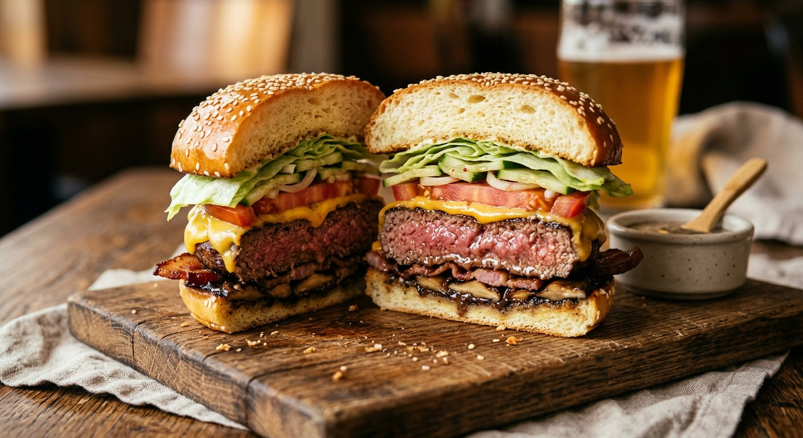

Select Your Burger Architecture
Updates ingredient tables, cover photo & Phases 4–6 liveHonest Culinary Physics: If by "juicy" you want rich melted fat + maximum crispy lacy Maillard crust, choose Path 1 (Double Smash). If by "juicy" you want true steakhouse medium pink edge-to-edge (57°C / 135°F) bursting with hot meat jus on first bite, a 3 mm smash can never deliver it because internal temp crosses 70°C in 90 seconds — choose Path 2 (Heston Blumenthal Vertical-Grain + Kenji Reverse-Sear)!
Precision Gear Checklist
1 g Digital Scale · Stand Mixer with Dough Hook · Meat Grinder (¼-in / 6 mm coarse plate) · 12-in Heavy Cast-Iron Skillet / Carbon-Steel Griddle · Stiff Solid Metal Spatula · Cheese Melting Dome · Six 4-in (10 cm) Crumpet/Muffin Rings (or folded double-thick 4 cm tall foil strips) · Mandoline (1 mm) · Immersion Blender & Tall Cup · Instant-Read Thermometer · Wire Rack, Parchment, Cheesecloth & Fine Mist Sprayer.
Enzyme Hokkaido-Tangzhong Dough & Cold Retard
Cook 65°C Tangzhong Paste
Whisk 20 g bread flour, 27 g water, and 60 g whole milk cold until lump-free, cook over medium heat whisking constantly (2–3 mins) to 65°C (149°F) until thick and ribbony, press plastic flush against surface, and cool to 21–24°C.
Bloom Yeast & Mix Base
Bloom 9 g yeast in 120 g milk at 35°C (95°F) for 5–8 mins until foamy. Whisk 320 g bread flour, 24 g sugar, 7 g sea salt, and 2 g diastatic malt powder in mixer bowl; knead on low with foamy yeast milk, 1 whole egg + 1 yolk, and cooled Tangzhong for 4 minutes.
3-Stage Butter Incorporation & Windowpane
Add 42 g softened butter in 3 separate pieces on medium-low, waiting until each piece absorbs completely before adding the next, then knead 6–8 minutes until glossy and passing the Windowpane Test. Proof covered 45 mins at 24°C, then refrigerate 90 minutes at 4°C.
Spiced Quick Pickles & 60-Second Black-Garlic Spread
Spiced Cucumber Ribbons
Pack 3–4 mm cucumber ribbons with 3 smashed garlic cloves and 15 g dill in a 1 L jar. Bring water, white vinegar, salt, sugar, and the cheesecloth spice sachet just to a boil, kill heat, steep 1 min, pour over cucumbers, cool 20 mins, and refrigerate crisp.
60-Second Immersion Mayo + Black Garlic Fold
Place yolk, Dijon, lemon juice, sugar, salt, and 180 ml neutral oil in a tall cup; hold immersion blender flat on bottom 15s, draw up slowly for thick mayo, then fold in mashed black garlic (25 g), ketchup (30 g), Chinkiang black vinegar (8 ml), chilled pickle brine (10 ml), Worcestershire (5 ml), Aleppo flakes (4 g), minced chives (10 g), and black pepper (1 g). Chill 1+ hour.
Ring Proofing & 190°C Golden Bake
Divide cold dough (~685 g) into 6 exact 112–114 g tight balls, center inside 6 greased 10 cm rings on parchment, press gently flat, cover without touching tops, and proof 45–60 minutes until doubled against the ring walls.
Mist finely with strained egg wash, scatter white sesame seeds, bake at 190°C (375°F) for 15–17 minutes to 88–90°C (190–195°F) internal core, brush immediately with 20 g melted butter, unring, and cool completely on a wire rack.
Path Fork: Meat Grinding, Cooking & Structural Build (Phases 4–6)
Tap to switch active path0°C Single Grind, 260°C Smash & Mechanical Stack
0°C Partial Freeze & Zero-Compression Grind
Freeze cubed short rib (385 g), chuck (340 g), sirloin (175 g) AND grinder head/6 mm plate for 25–30 minutes at 0°C (32°F). Pass through once only; never knead or salt! Gently gather into 12 loose, airy 72–75 g balls and keep cold.
Toppings & Butter-Toasted Buns
Bake 12 bacon strips flat on a rack at 200°C for 18–22 mins. Sear Shiitake strips undisturbed 3 mins dry/unsalted for dark crust, flip 2 mins, finish 30s with salt, pepper & 14 g butter. Shock 1 mm white onion in ice water 2 mins and squeeze 100% bone-dry in paper towels; salt heirloom tomato discs on a wire rack 15 mins and blot dry. Butter-toast split buns 60–90s edge-to-edge.
245–260°C Dry Smash & Steam Melt
Heat dry cast iron to smoking 245–260°C (475–500°F). Drop two 72 g balls 10 cm apart, pile dry onion ribbons atop Ball #1, smash both cleanly through parchment to 3 mm (⅛-in) holding forceful pressure 5 full seconds, season tops generously with kosher salt & cracked pepper, sear untouched 60–75s until lacy edges crisp, scrape 100% of crust free at a sharp angle and flip onto onions, top Patty #1 with Yellow American + Patty #2 with Aged Sharp Cheddar, splash 5 ml water under dome for 20–30s, and double-stack!
Bottom-to-Top Assembly
Bottom Bun → 15 g Black-Garlic Spread → 3–4 drained Quick Pickle ribbons → Onion-American Patty + Cheddar-Crisp Patty → 2 X-crossed Bacon strips → Seared Shiitakes → Drained Salted Heirloom Tomato → Crown Bun with 15 g Spread.
10s Sterile Blanch, Vertical-Grain Log & 57°C Reverse-Sear

10-Second Boiling Blanch & Heston Blumenthal Log
Dip whole trimmed cuts (480 g chuck, 420 g short rib, 300 g sirloin) in boiling water for 10 seconds to pasteurize surfaces for safe medium cooking (ThermoWorks), dry, cube, and freeze 30 mins at 0°C with grinder parts. Grind onto plastic wrap laying strands strictly parallel lengthwise into a loose 10.5 cm (4.25-in) cylinder (zero mashing, zero salt!), twist tight like a candy wrapper, freeze 25 minutes, slice crosswise into 6 × 200 g (1-in thick) vertical-grain steaks, and dimple centers 5 mm deep.
95°C (200°F) Oven Reverse-Sear to 52–53°C
Season exteriors right before baking and warm on a wire rack at 95°C (200°F) for 18–25 minutes (Serious Eats): pull at 49°C (120°F) for Medium-Rare (54°C final) or chef's gold-standard 52–53°C (126–128°F) for warm pink Medium (57°C / 135°F final).
45-Second 250°C Sear, Garlic-Thyme Arrosé & Mandatory 4-Minute Rest
Sear in smoking avocado oil at 250°C (485°F) for 45–60s undisturbed (never press!), flip, drop 42 g butter + 3 crushed garlic cloves + 4 thyme sprigs in pan, spoon foaming butter continuously over patties for 20s, stack American + Aged Cheddar on each patty under steam dome 20–25s, and rest 4 full minutes on a wire rack (Mental Floss) before placing over an Iceberg Lettuce moisture shield!
Chef's Notes & Biochemical Principles
Zero Salt Before Cooking & 0°C Grind
Salting raw mince dissolves Myosin into springy sausage glue (Serious Eats), while warm grinding smears fat around protein (Burger Lab).
Sodium Citrate Dual-Cheese Emulsion & 8× Umami Synergy
American cheese's Sodium Citrate prevents sharp Cheddar from splitting oily, while beef/bacon IMP + shiitake/black-garlic/tomato GMP & free Glutamate multiply umami perception exponentially.